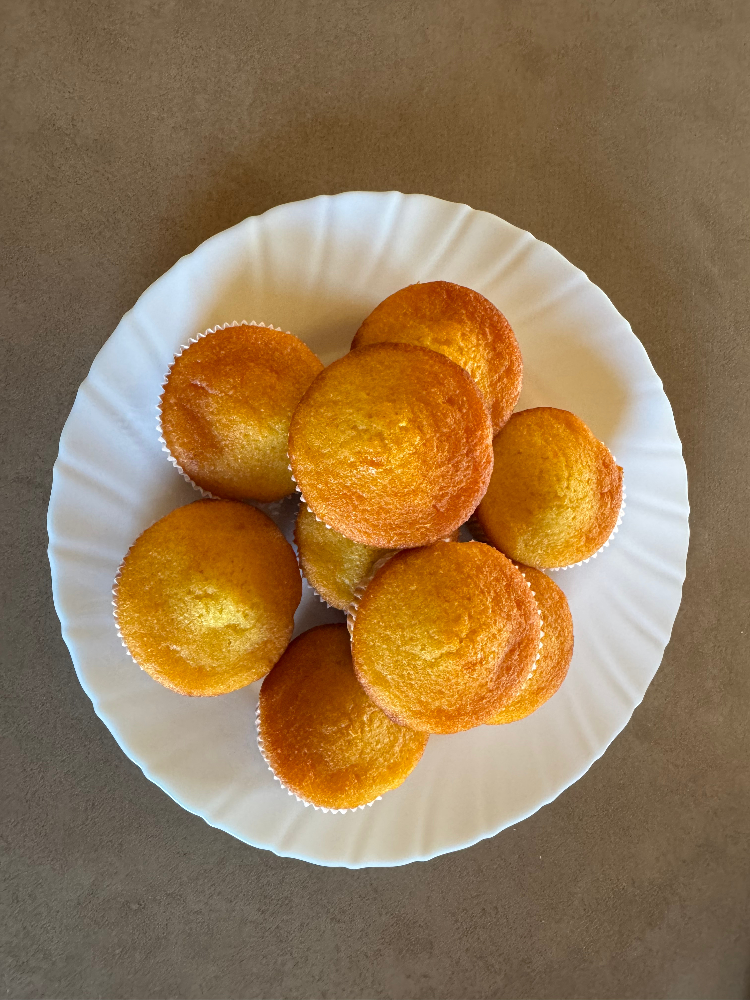
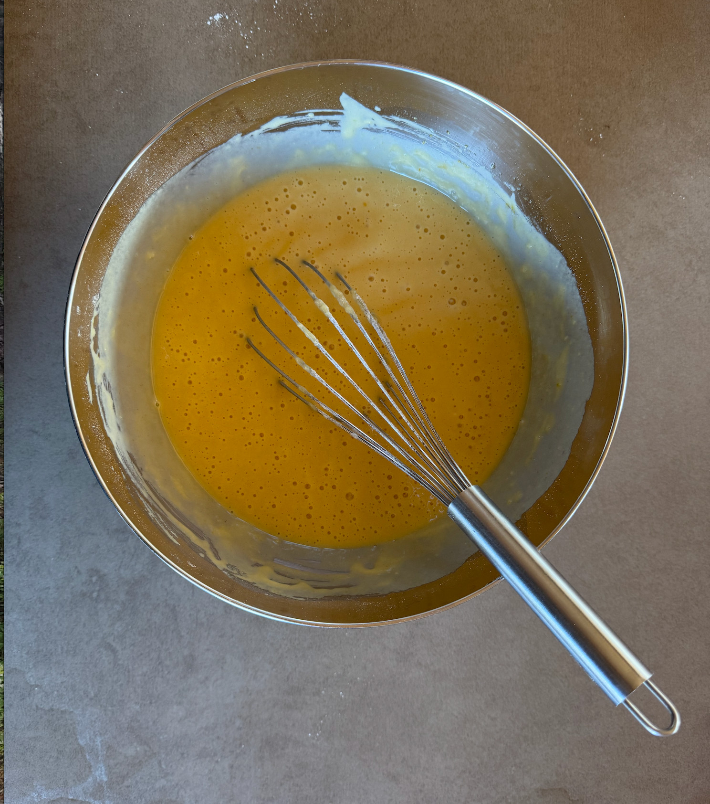
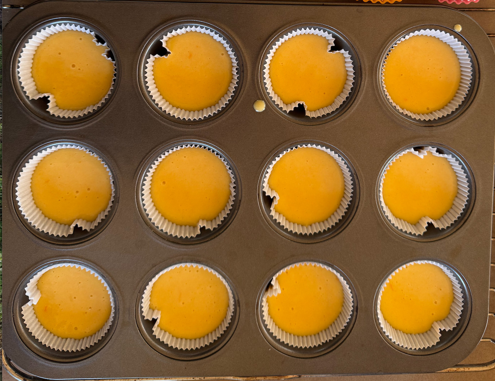
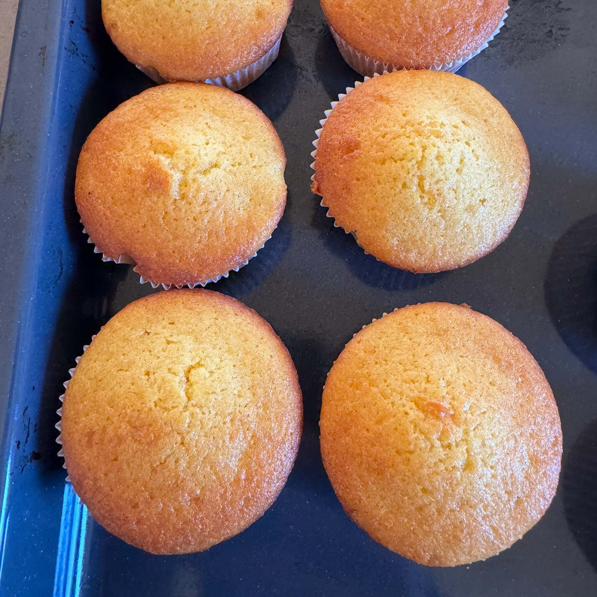

Recepta de magdalenes

Ingredients
- 400g de farina
- 400g de sucre
- 2 ous
- 1 vas de llet
- 1 vas d'oli
- 7g de llevadura seca de pastisser
Instruccions
Posem en un bol els ous amb el sucre i ho batem fins que quedi ben barrejat. Hi afegim la llet i l'oli i tornem a remenar. Quan estigui tot integrat, tamisem la farina amb el llevat i ho incorporem mica en mica fins a obtenir una massa fina.
Deixem reposar la massa uns minuts mentre escalfem el forn a 180°C. Omplim els motlles fins a dos terços i, si volem, hi posem una mica de sucre per sobre.
Posem les magdalenes al forn i les deixem coure uns 20 minuts, fins que siguin daurades. Un cop cuites, les deixem refredar a temperatura ambient.
Galeria d'imatges
-

-

-

Vídeo
En el següent vídeo deCulinaris podem veure un altra recepta de com preparar unes magnífiques magdalenes.